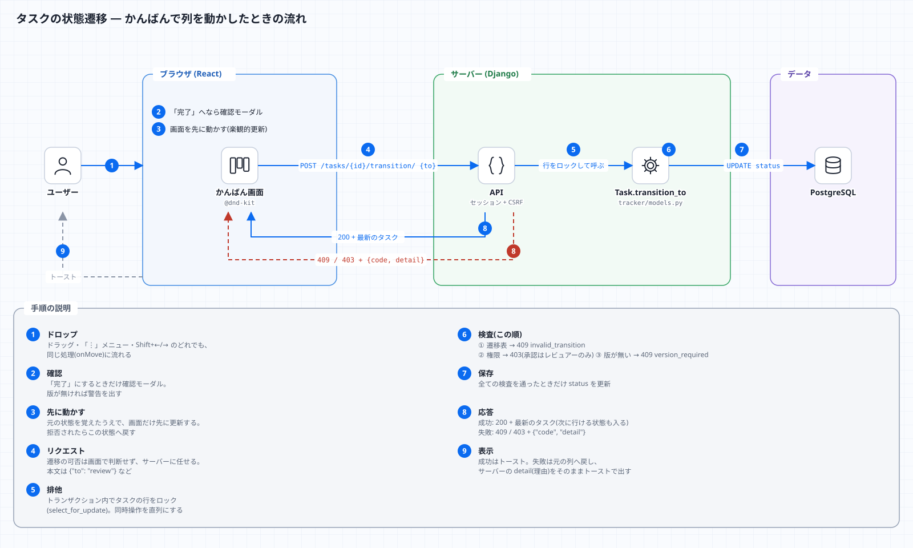
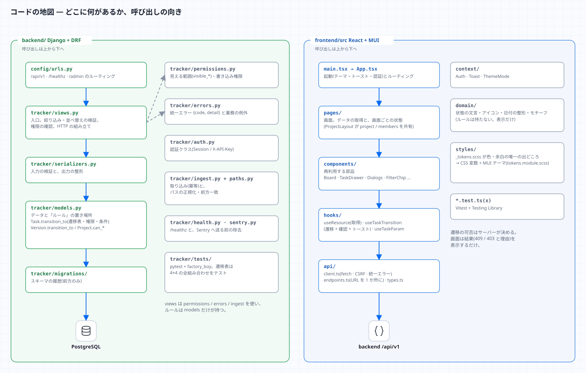

1. 全体像

このシステムは何か
アセット(モデルなどの制作物)ごとに 工程(Step)のタスク があり、タスクには 版(Version) と ノート が付く、制作進行の管理ボード。 ShotGrid(Flow Production Tracking)の「何を管理する道具か」を、自分で作って理解するための学習用プロジェクトでもある。
用語
| このアプリ | ShotGrid での呼び方 | 意味・メモ |
|---|---|---|
Project |
Project | 作品・案件。code(URL に使う。大文字小文字を区別しない)と name |
ProjectMember.role |
(権限グループ) | reviewer(承認できる)/ artist(編集できる)/ viewer(見るだけ) |
Step |
Pipeline Step | 工程(モデリング・リグ・FX …)。マイグレーションで初期データを入れる |
Entity |
Asset / Shot | 今は asset のみ。path は品質スキャンとの突き合わせ用 |
Task |
Task | アセット × 工程 で 1 つ(一意)。担当者・期日・優先度・状態を持つ |
Version |
Version | タスクの成果物の版。file_ref(場所)・サムネイル・DCC 情報。番号はタスク内で連番 |
Note |
Note | コメント。対象は entity / task / version の 3 種だけ |
QualityReport |
(自作) | AssetDataInsightSuite の結果。パスごとの欠陥数 |
VisualResult |
(自作) | VisualRegressionQATool の結果。合否・差分率・撮影条件 |
5 つの原則(コードはこれに従っている)
- ルールは 1 か所。状態遷移と権限は
backend/tracker/models.py(Task.transition_toなど)だけが持つ。 - 画面はルールを持たない。画面は「サーバーに頼み、結果(成功 / 409 / 403 と理由)を表示する」だけ。次に行ける状態は
next_statusesでサーバーから受け取る。 - 見える範囲を最初に絞る。
backend/tracker/permissions.pyのvisible_*が、利用者が見られるものだけの QuerySet を返す。見えないものは「存在しない」(404 / 400)として扱う。 - 取り込みは冪等。同じものを再送しても重複しない(
scan_run_id/run_id/Idempotency-Key)。 - 状態は「色 + アイコン + 文字」。色だけで区別しない(色覚・グレースケール・ダークでも読める)。
1 本の操作の旅
かんばんで列を動かしたときの流れ(9 手順)。各手順を コードのどこが担当するか は 02・03 で追う。

コードの地図

「〜したい」→ どこを開くか
| したいこと | 開く場所 |
|---|---|
| 状態遷移のルールを知りたい / 変えたい | backend/tracker/models.py の Task.TRANSITIONS と transition_to。テストは tests/test_task_transitions.py |
| 誰が何をできるか | Project.can_write_as / can_review_as、permissions.py |
| API のエンドポイント一覧 | backend/config/urls.py(ルーター)と、各 ViewSet |
| エラーの形・コード | backend/tracker/errors.py |
| 取り込み(品質・画面差分) | backend/tracker/ingest.py、paths.py、views_ingest.py、scripts/send_*.py |
| 画面の部品・かんばん | frontend/src/components/(Board.tsx、TaskDrawer.tsx) |
| 画面ごとの処理 | frontend/src/pages/ |
| 色・余白・テーマ | frontend/src/styles/_tokens.scss(唯一の出どころ) |
| API の呼び出し | frontend/src/api/endpoints.ts(URL は全てここ) |
| 設定(環境変数) | backend/config/settings.py、.env.example |
| 運用(バックアップ・公開) | docs/operations.md、scripts/ |
確認
-
TaskとEntityとStepの関係を、口で説明できる(「アセット × 工程で 1 タスク」)。 - 5 つの原則のうち、「画面はルールを持たない」の例を、コードから 1 つ見つける(ヒント:
frontend/src/domain/status.tsxに遷移表が 無い こと)。 - 図の矢印のうち、
X-API-Keyを使うものと、セッションを使うものを区別できる。